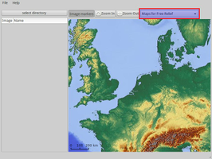
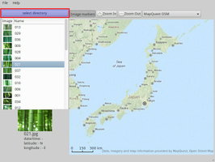
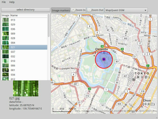

Pictag
Archivierte Anleitung
Dieser Artikel wurde archiviert, da er - oder Teile daraus - nur noch unter einer älteren Ubuntu-Version nutzbar ist. Diese Anleitung wird vom Wiki-Team weder auf Richtigkeit überprüft noch anderweitig gepflegt. Zusätzlich wurde der Artikel für weitere Änderungen gesperrt.
Zum Verständnis dieses Artikels sind folgende Seiten hilfreich:
Pictag  ist ein kleines grafisches Werkzeug, um bei Fotos nachträglich den Aufnahmeort hinzuzufügen (Geocoding). Damit es besonders für diejenigen interessant, deren Digitalkamera oder Handy keinen integrierten GPS-Empfänger besitzt. Im Gegensatz zum Programm Geotag stand eine möglichst einfache Bedienung im Vordergrund. Geotag bietet dagegen mehr Optionen wie z.B. Informationen zur Höhe über N.N., die Blickrichtung oder das Ermitteln von Ortsnamen.
ist ein kleines grafisches Werkzeug, um bei Fotos nachträglich den Aufnahmeort hinzuzufügen (Geocoding). Damit es besonders für diejenigen interessant, deren Digitalkamera oder Handy keinen integrierten GPS-Empfänger besitzt. Im Gegensatz zum Programm Geotag stand eine möglichst einfache Bedienung im Vordergrund. Geotag bietet dagegen mehr Optionen wie z.B. Informationen zur Höhe über N.N., die Blickrichtung oder das Ermitteln von Ortsnamen.
Die Programmsprache ist zwar Englisch, aber Fremdsprachenkenntnisse sind nicht erforderlich. Erstellt wurde es mit Python.
Installation¶
 Das Programm ist nicht in den offiziellen Paketquellen enthalten. Man kann zur Installation entweder das Software-Center (pictag) oder das "Personal Package Archiv" (PPA) [1] des Entwicklers Thomas Bechtold nutzen.
Das Programm ist nicht in den offiziellen Paketquellen enthalten. Man kann zur Installation entweder das Software-Center (pictag) oder das "Personal Package Archiv" (PPA) [1] des Entwicklers Thomas Bechtold nutzen.
PPA¶
Das PPA unterstützt derzeit ausschließlich die Ubuntu-Versionen 12.04 und 12.10.
Adresszeile zum Hinzufügen des PPAs:
ppa:toabctl/pictag
Hinweis!
Zusätzliche Fremdquellen können das System gefährden.
Ein PPA unterstützt nicht zwangsläufig alle Ubuntu-Versionen. Weitere Informationen sind der  PPA-Beschreibung des Eigentümers/Teams toabctl zu entnehmen.
PPA-Beschreibung des Eigentümers/Teams toabctl zu entnehmen.
Damit Pakete aus dem PPA genutzt werden können, müssen die Paketquellen neu eingelesen werden.
Nach dem Aktualisieren der Paketquellen kann das folgende Paket installiert [2] werden:
pictag (ppa)
 mit apturl
mit apturl
Paketliste zum Kopieren:
sudo apt-get install pictag
sudo aptitude install pictag
Bedienung¶
Bei Ubuntu-Varianten mit einem Anwendungsmenü erfolgt der Start [3] über den Menü-Eintrag "Grafik -> Pictag".
|  |
| Kartenauswahl |
|  |
| Ordner- und Bildauswahl |
|  |
| Geokodierung setzen |
Das Hinzufügen der Geokodierung erfolgt in drei Schritten (getestet mit .jpg-Dateien):
Kartenauswahl - zur Verfügung stehen verschiedene Darstellungen, die Daten stammen aus dem Projekt OpenStreetMap:
OpenStreetMap Mapnick
OpenStreetMap Osmarender
MapQuest OSM
OpenStreetMap Cycle Map
OpenStreetMap Transport Map
Maps for Free Relief
Ordnerauswahl - Einzelbilder sind nicht vorgesehen
Geomarkierung setzen - für das ausgewählte Foto:
Karte entsprechend verschieben und vergrößern
Setzen mit Linksklick

optional: Korrektur des Orts über Verschieben des Geomarkers
optional: Zum gleichzeitigen Setzen einer Geomarkierung für mehrere Fotos markiert man diese mit ⇧ +
oder
Strg +
Das Speichern (Einbetten) der Geokodierung erfolgt automatisch. Zum Entfernen einer Geokodierung ist Pictag nicht geeignet. Dazu muss man ein Kommandozeilenwerkzeug wie z.B. ExifTool bemühen. Auch manch anderes könnte noch eleganter umgesetzt werden, z.B. eine automatische Positionierung der Karte, wenn man einen Ordner mit bereits geokodierten Fotos öffnet.
Wie man Geodaten praktisch nutzen kann, wird im Artikel Metadaten/Geokodierung beschrieben.
Links¶
Pictag
im Ubuntu apps directory
Pictag: Fotos nachträglich mit Geodaten versehen
 - heise Open Source, 07/2012
- heise Open Source, 07/2012Metadaten/Geokodierung - alternative Programme zur Geokodierung von Fotos
Metadaten Grafik
 Übersichtsartikel
Übersichtsartikel
- Erstellt mit Inyoka
-
 2004 – 2017 ubuntuusers.de • Einige Rechte vorbehalten
2004 – 2017 ubuntuusers.de • Einige Rechte vorbehalten
Lizenz • Kontakt • Datenschutz • Impressum • Serverstatus -
Serverhousing gespendet von